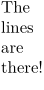
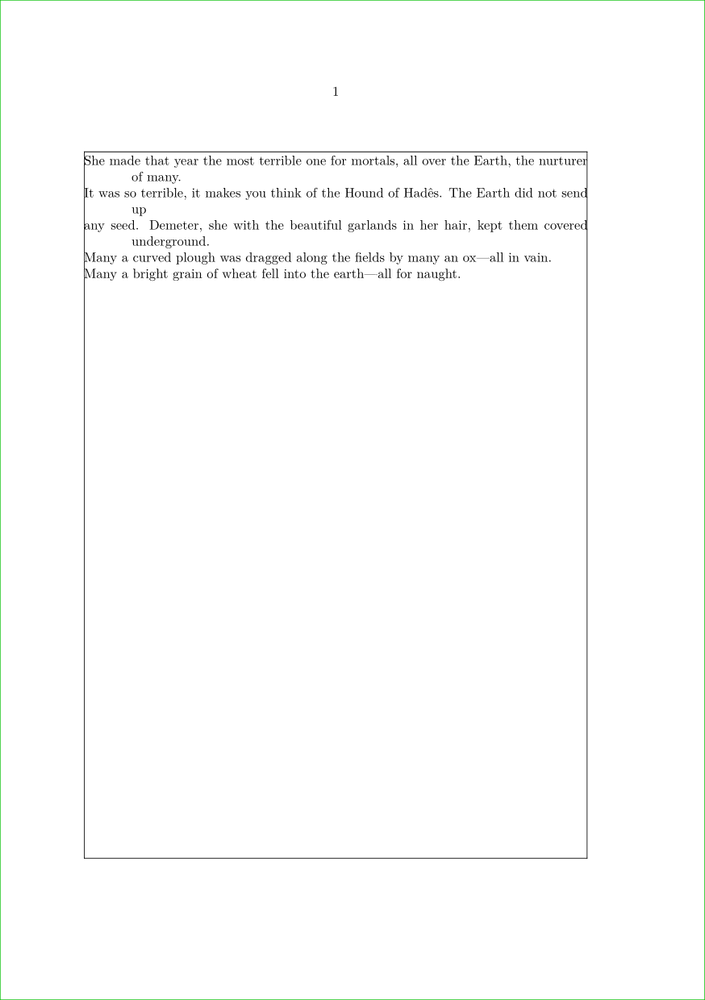

Contents
Summary
The instances of \startlines ... \stoplines are used for typsetting text with preformatted line breaks.
Instances
| \startlines ... \stoplines |
Settings instance
Description
This allows the printing of text according to existing linebreaks within the text. The command itself takes no setups, but you can use
\setuplines
to indicate that you wish to preserve whitespace, or make it visible, as well as some other tricks; and if you find yourself using the same few setups throughout the document, you can make special-purpose environments using
\definelines
.
Examples
Example 1
-
\startlines The lines are there! \stoplines
- 
Example 2
For poems with longer lines you can use positive and negative values. Long lines will break and indent to indicate that the new line the continuation of the line before.
-
\setuplines [before={\blank\startnarrow[default=left,left=1cm]}, after={\stopnarrow\blank}, indenting={yes,-1cm}] \showframe[text][text] \starttext \startlines She made that year the most terrible one for mortals, all over the Earth, the nurturer of many. It was so terrible, it makes you think of the Hound of Hadês. The Earth did not send up any seed. Demeter, she with the beautiful garlands in her hair, kept them covered underground. Many a curved plough was dragged along the fields by many an ox—all in vain. Many a bright grain of wheat fell into the earth—all for naught. \stoplines \stoptext
- 